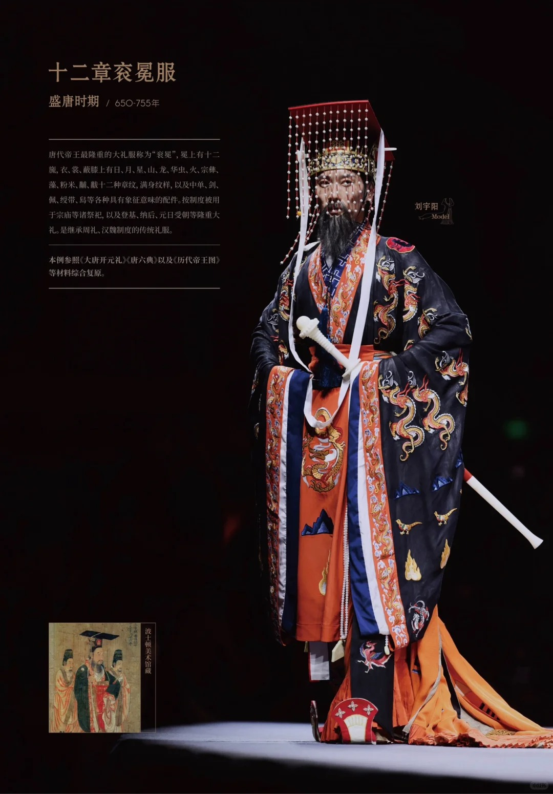
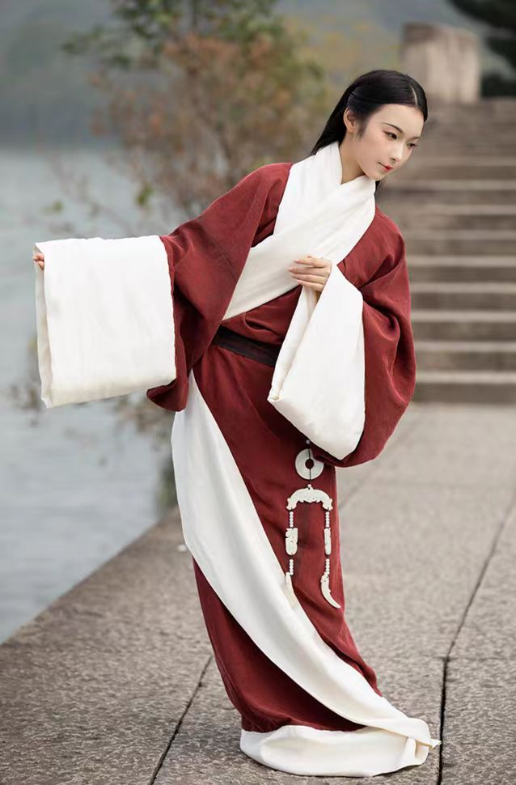

- 春秋战国时期
- 秦汉时期
- 魏晋时期
- 隋朝时期
- 唐朝时期
- 宋朝时期
- 明朝时期
- 宋朝时期
- 清朝时期
- 民国时期
- 现在
历史发展
形成
发展
中断
复兴
汉服在春秋战国时期的形成与发展是一个逐渐演变的过程，受到当时政治、经济、文化等多方面因素的影响
早期服饰文化积累：从原始社会到商周时期，华夏民族已形成了具有一定特色的服饰体系。早期的服饰主要以简单的遮体保暖为目的，随着纺织技术的发展，开始出现了较为复杂的服饰样式和装饰，为汉服的形成奠定了基础。

礼仪制度的影响：周朝建立了完备的礼仪制度，服饰作为礼仪的重要组成部分，被赋予了严格的等级规范。不同身份、地位的人在服饰的款式、颜色、图案等方面都有明确的规定，这种礼仪制度下的服饰规范为汉服的形制和文化内涵奠定了基础。
“深衣” 的出现：深衣是汉服发展史上的一个重要形制。它将上衣下裳连为一体，采用 “续衽钩边” 的方式，使衣服更加合身，便于穿着和活动。深衣的出现体现了当时人们在服饰制作上的创新和审美观念的变化，不仅在日常生活中广泛穿着，也成为了礼仪场合的重要服饰。

服饰风格的多样化：春秋战国时期，诸侯割据，各国文化相互交流融合，服饰风格也呈现出多样化的特点。例如，赵国推行 “胡服骑射”，引进了北方游牧民族的服饰元素，使服装更加简洁、实用，便于骑射作战，这对传统汉服的款式和功能产生了一定的影响；而在南方的楚国，服饰则以华丽、飘逸为特点，常采用鲜艳的色彩和精美的刺绣，展现出独特的地域文化风格。
文化思想的反映：春秋战国时期百家争鸣，各种文化思想蓬勃发展，这些思想也在汉服的设计和穿着上有所体现。儒家强调礼仪和道德规范，反映在服饰上就是对服饰等级制度的严格遵守和对服饰礼仪功能的重视；道家主张顺应自然，追求天人合一，这使得汉服在设计上注重自然、简洁的风格，追求服装与人体、自然环境的和谐统一。
秦汉时期是汉服发展的重要阶段，在这一时期，汉服的形制、色彩、穿着规范等方面都得到了进一步的完善和发展
基本沿袭战国风格：秦代国祚较短，汉服在很大程度上沿袭了战国时期的风格。不过，由于秦统一六国后推行了一系列统一措施，服饰也在一定程度上走向统一。
以黑色为尊：秦代崇尚黑色，这与秦朝 “水德” 的观念有关。在服饰颜色上，黑色成为尊贵之色，秦始皇常服通天冠，身着黑色袍服。这种对黑色的推崇也影响了当时社会各阶层的服饰色彩选择。

服饰制度初建：秦朝建立了初步的服饰制度，对不同等级的人在服饰的样式、材质等方面做出了一些规定，以体现封建等级秩序。例如，官员的服饰在冠帽、佩饰等方面有明确的区分，不同职位的官员所佩戴的冠饰不同，以此来彰显身份和地位。
确立礼仪规范：汉代进一步完善了冠服制度，使其成为体现封建礼仪和等级制度的重要标志。根据《后汉书・舆服志》记载，不同身份、职业和场合都有相应的冠服规定。例如，皇帝在祭祀等重大场合穿着衮冕，衮冕的形制、颜色、图案等都有严格规定，以彰显皇权的至高无上；官员则根据品级不同佩戴不同的冠帽，如进贤冠等，冠上的梁数也有区别，以区分官职高低。
祭服与朝服：祭祀是汉代重要的活动，祭服有着严格的规定，以表达对祖先和神灵的敬意。朝服则是官员在朝会等正式场合穿着的服饰，其样式和颜色也根据等级有所不同，一般采用深衣制，颜色以黑色或青色为主。
直裾袍服的兴起：到了东汉时期，直裾袍服逐渐流行起来。直裾袍服的衣襟不再绕转，而是垂直而下，穿着更加方便，也更适合日常活动。随着时间的推移，直裾袍服逐渐成为主流服饰之一，并且在款式上也有了更多的变化和创新，如出现了不同的领型和袖型。

襦裙的发展：襦裙在汉代也得到了进一步的发展，成为女性常见的服饰之一。襦是一种短上衣，裙则是下裳，通常为长裙。襦裙的搭配灵活多样，根据不同的场合和个人喜好，可以选择不同的颜色、材质和装饰。在汉代的陶俑和壁画中，可以看到许多穿着襦裙的女性形象，她们的襦裙有的简约朴素，有的则装饰华丽，体现了当时不同阶层女性的服饰风格。
纺织业的繁荣：汉代的纺织业非常发达，丝绸生产更是达到了很高的水平。政府设立了专门的机构管理纺织业，促进了纺织技术的进步。当时已经能够生产出各种精美的丝绸织物，如锦、绣、绫、罗等，这些丝绸面料质地细腻、色彩鲜艳、图案精美，为汉服的制作提供了丰富的材料选择。
制作工艺的提高：在汉服的制作工艺方面，汉代也有了很大的进步。除了传统的裁剪和缝制技术外，还出现了一些新的装饰工艺，如刺绣、印染等。刺绣工艺在汉代达到了很高的水平，工匠们能够运用各种针法绣出精美的图案，如龙凤、花卉、人物等，使汉服更加华丽美观。印染技术也得到了发展，能够染出各种鲜艳的颜色，并且颜色的耐久性也有所提高。